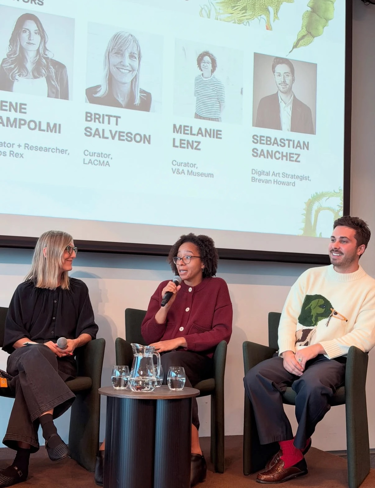
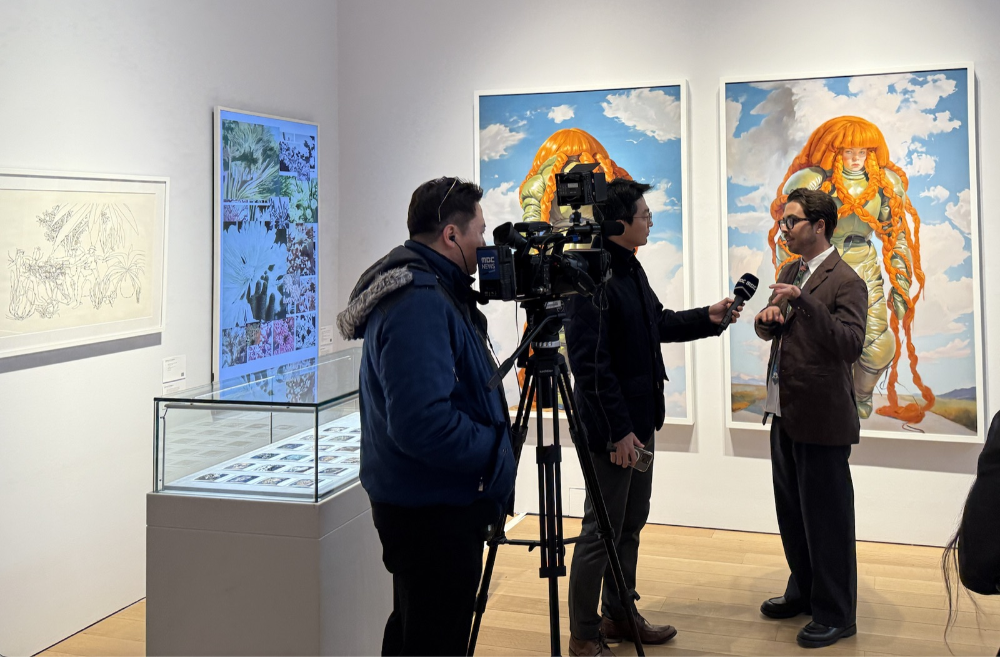
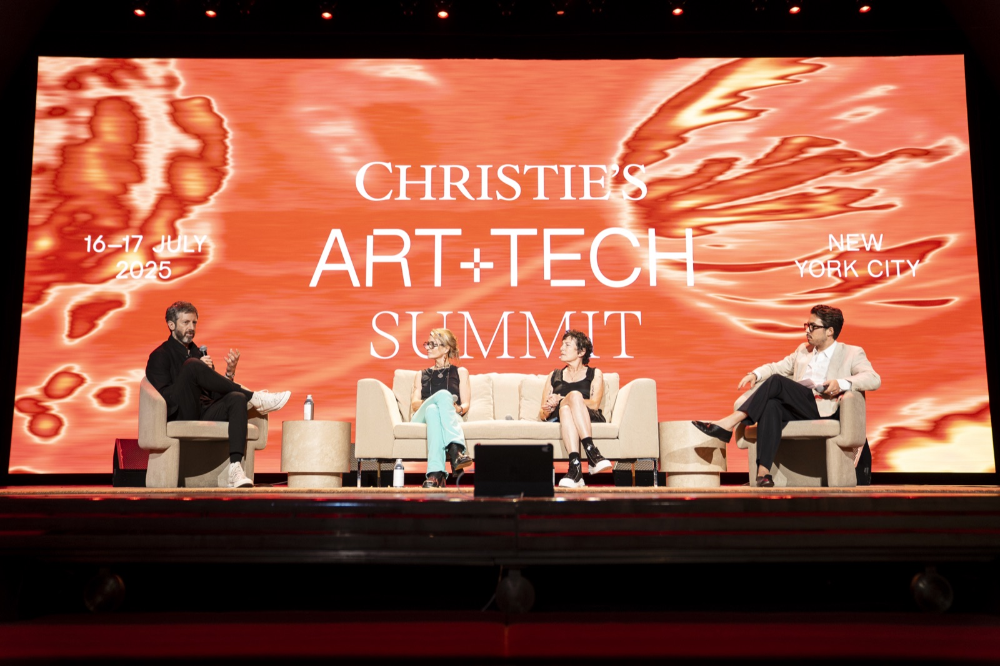
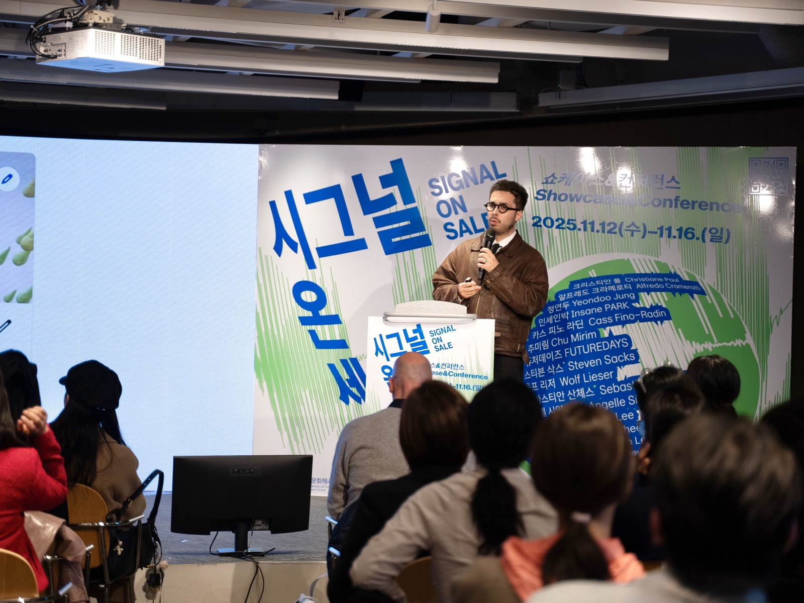
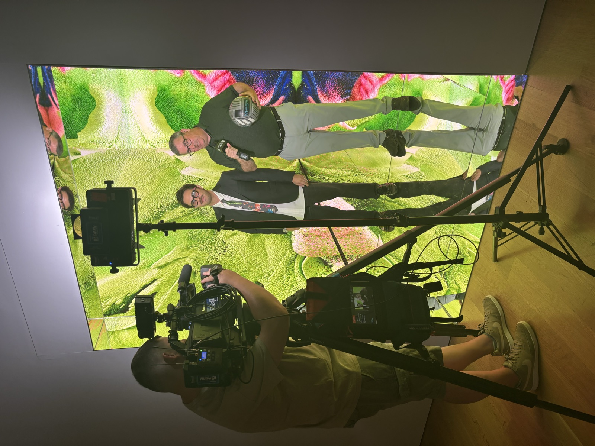
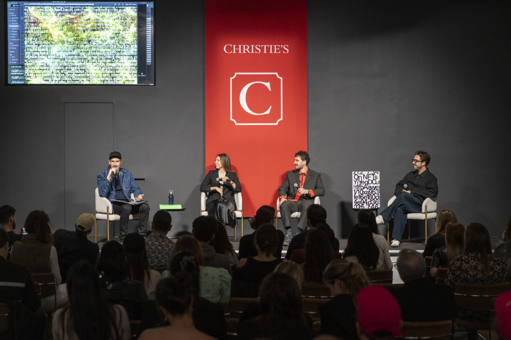
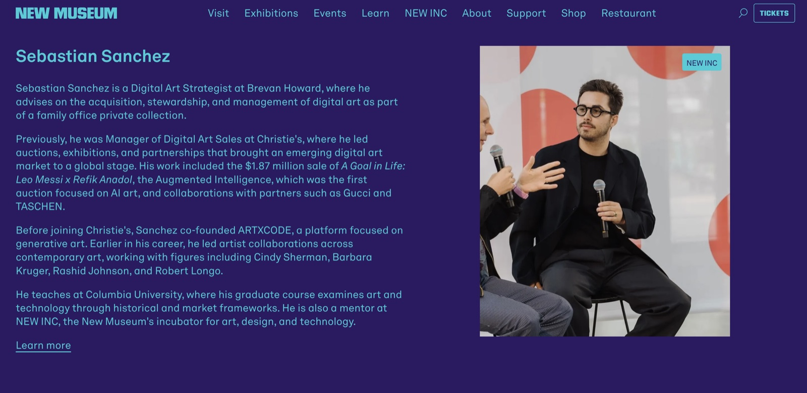
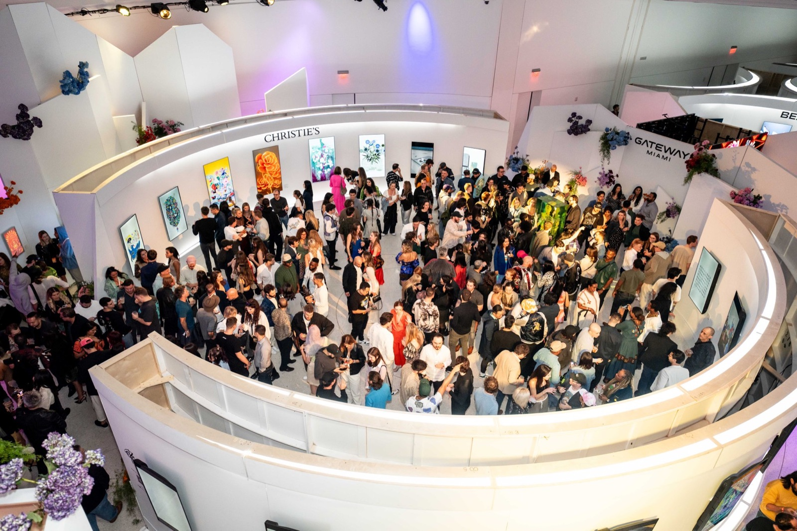

Sebastian Sanchez is a Digital Art Strategist at Brevan Howard, where he advises on the acquisition, stewardship, and management of digital art as part of a family office private collection.
Previously, he was Manager of Digital Art Sales at Christie's, where he led auctions, exhibitions, and partnerships that brought an emerging digital art market to a global stage. His work included the $1.87 million sale of A Goal in Life: Leo Messi x Refik Anadol, the Augmented Intelligence, which was the first auction focused on AI art, and collaborations with partners such as Gucci and TASCHEN.
Before joining Christie's, Sanchez co-founded ARTXCODE, a platform focused on generative art. Earlier in his career, he led artist collaborations across contemporary art, working with figures including Cindy Sherman, Barbara Kruger, Rashid Johnson, and Robert Longo.
He teaches at Columbia University, where his graduate course examines art and technology through historical and market frameworks. He is also a mentor at NEW INC, the New Museum's incubator for art, design, and technology.







